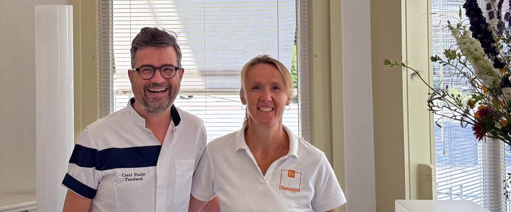
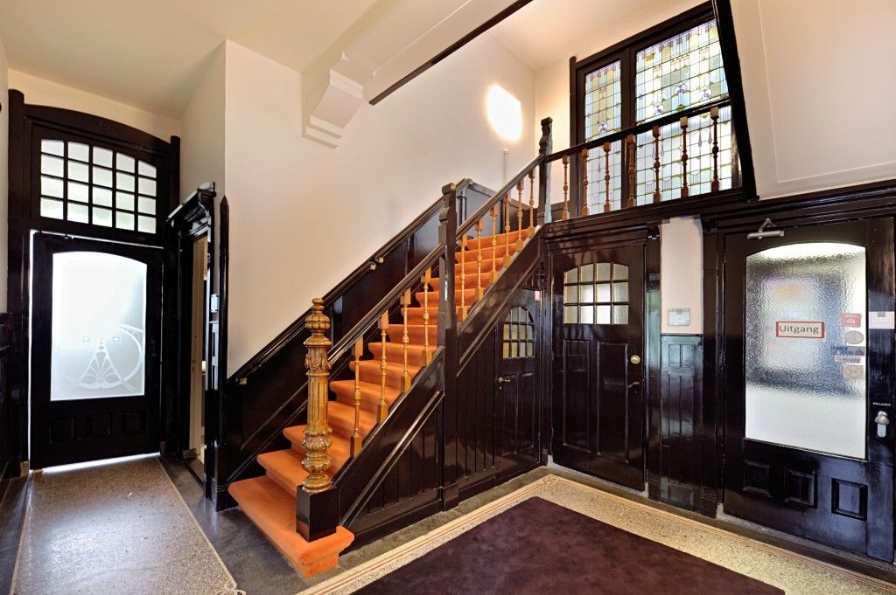
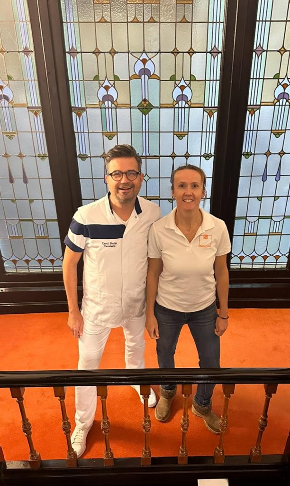
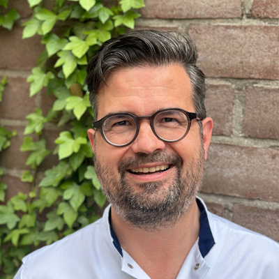
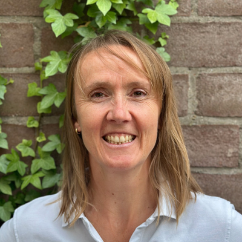
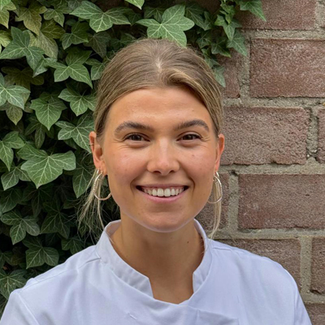

Tandarts in Arnhem, aan de Apeldoornseweg
Tandartsen met een glimlach, in Villa Andria
Persoonlijke aandacht en goede mondzorg, in een monumentale villa. U krijgt altijd een behandelplan op maat, met een helder kostenoverzicht vooraf.

Praktijknummer
026 445 66 88Bereikbaar ma t/m vr van 08:15 tot 11:00 en van 13:00 tot 14:30 uur. Tijdens openingstijden ook via WhatsApp.
Spoed tijdens openingstijden
026 351 00 53Pijn, een ongeluk of een afgebroken tand? Bel dit nummer, dan kijken we wanneer u terecht kunt.

Sinds 2008 in een monument aan de Apeldoornseweg
Onze praktijk zit in de sfeervolle Villa Andria. Achter de oude voordeur vindt u moderne behandelkamers met goede apparatuur, die voldoen aan strikte hygiënenormen.
Tandartsen, mondhygiënisten en (paro)preventieassistenten werken hier nauw samen. Ons team volgt regelmatig bij- en nascholing, zodat uw zorg bij de tijd blijft.
- Eigen tandtechnisch lab in het pand
- Laboratorium Primi Dentes zit in hetzelfde gebouw. Veel tandtechnisch werk wordt in huis gemaakt: korte wachttijden en direct overleg tussen tandarts, technicus en u.
- Toegankelijk voor iedereen
- De praktijk is toegankelijk voor mindervaliden. Voor de jongste bezoekers is er een speelhoek in de wachtruimte.
- Twee keer per jaar controle
- Dat adviseren we iedereen. Zo houden we samen uw gebit gezond.
Nieuw bij ons
We hebben op dit moment beperkte ruimte voor nieuwe patiënten. Wilt u zich inschrijven of heeft u eerst een vraag? Neem gerust contact op.
-
1
U schrijft zich in
Per mail of telefoon. Wij verwerken uw inschrijving en nemen persoonlijk contact met u op.
-
2
U krijgt een bevestiging
Per e-mail, met praktische informatie over de praktijk en uitleg over de volgende stappen.
-
3
Het eerste bezoek
We trekken extra tijd voor u uit. We maken kennis, bekijken uw gebit en bespreken uw wensen en eventuele klachten. Neem een geldig legitimatiebewijs mee.
-
4
Uw plan op maat
Op basis van het eerste bezoek maken we een persoonlijk zorgplan en, als dat nodig is, een behandelplan met kostenoverzicht.
Kosten van het eerste bezoek
De intake rekent u direct per pin af bij de receptie. De nota kunt u zelf indienen bij uw zorgverzekeraar. Hebben wij al recente röntgenfoto's van u, dan kunnen X10 en X21 vervallen.
| Code | Omschrijving | Bedrag |
|---|---|---|
| C001 | Consult voor een intake | € 57,01 |
| X10 | Maken en beoordelen kleine röntgenfoto (2x, prijs per foto) | € 21,00 |
| X21 | Maken en beoordelen kaakoverzichtsfoto | € 90,02 |

Het team
Bij binnenkomst wordt u vriendelijk ontvangen, daarna kunt u plaatsnemen in de wachtruimte. U houdt zelf de regie over uw behandeling; wij begeleiden u met zorg, aandacht en vakmanschap.



Tandartsen
- Carel Duijn, praktijkhouder
- Marianne Fredrikze, praktijkhouder
- Eef Mulders
- Lisa van Kouterik
- Brechtje Grotenhuis
- Danique Dinjens
- Nikki Boerstal
Mondhygiënisten
- Wood Gabriël-Boutros
- Ellen Custers
- Firat Ak
(Paro)preventie
- Betül
- Martine
Tandartsassistentes
- Kewser
- Sena
- Kim
- Alyssa
- Sarah
Receptie en praktijkmanagement
- Seve
- Tessa
- Samantha
- Michelle, praktijkmanager
Afspraak maken of verzetten
Een afspraak maakt u telefonisch via 026 445 66 88. Daarna krijgt u een bevestiging per e-mail.
Wijzigen of annuleren kan kosteloos tot 48 uur van tevoren, per telefoon of e-mail. Die 48 uur telt op werkdagen: weekenduren tellen niet mee.
Komt uw halfjaarlijkse controle eraan? Bel even, dan plannen we hem in.
Openingstijden
| Maandag | 08:00 tot 12:00 | 13:00 tot 21:00 |
|---|---|---|
| Dinsdag | 08:00 tot 12:00 | 13:00 tot 16:00 |
| Woensdag | 08:00 tot 12:00 | 13:00 tot 16:00 |
| Donderdag | 08:00 tot 12:00 | 13:00 tot 16:00 |
| Vrijdag | 08:00 tot 12:00 | 13:00 tot 16:00 |
Telefonisch bereikbaar van 08:15 tot 11:00 en van 13:00 tot 14:30 uur. Tijdens openingstijden kunt u ook WhatsAppen naar 026 445 66 88.
Langskomen of contact
Tandartspraktijken Apeldoornseweg 59Apeldoornseweg 59
6814 BJ Arnhem
Niet tevreden?
Dat horen we graag van u. Bespreek het met uw behandelaar, bel of mail ons. We bespreken uw klacht met de betrokken collega's en nemen binnen vijf werkdagen contact met u op.
Komen we er samen niet uit, dan kunt u gratis gebruikmaken van de onafhankelijke klachtenregeling van de KNMT, waar onze praktijk bij is aangesloten.